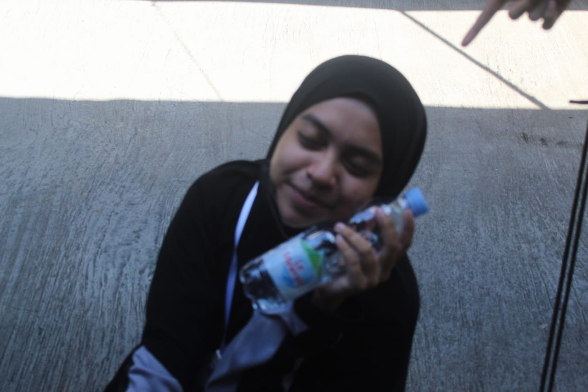
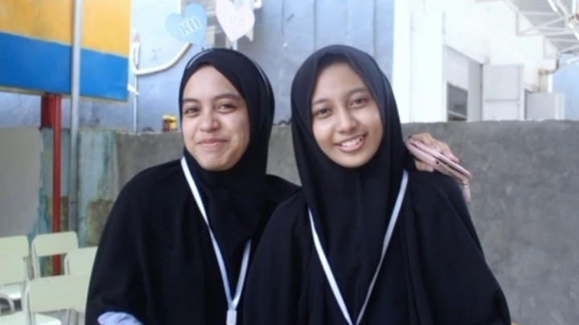
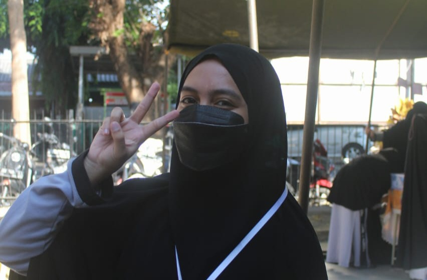

she, my one and only senior
she is named kak Fahdellah R. yang di kenali keceriannya oleh kebanyakan orang. tapi tidak hanya ceria seniorku juga merupakan orang yang hebat. greatness that i never even imagined before. hebat atas segala pencapaiannya, hebat dengan segala hal yang pernah dia lalui yang bahkan bisa jadi apa yang ia lalui itu tidak semua orang bisa. hebat untuk segala keputusan yang berani ia ambil, and there are still many great things about her that most people don't know.
tapi selain hebat, yang ku ketahui seniorku juga merupakan orang yang penyabar sangat penyabar. sabar dalam segala hal, apalagi sabar dalam menghadapi juniornya yang mungkin bisa di bilang tiada hari tanpa menjaili senior satu satunya itu hehehe, im sorry for that ya. selain itu semua seniorku pastinya CIMUT and smart
tbh there are still many beautiful things that she has that even her junior are unable to explain through the existing words maa syaa Allah baraakallahu fiik!!

one of your precious moments
look, look at this picture. maybe without her realizing my gaze didn't
leave at that time. a gaze full of pride at her. bangga, bangga sekali bahkan lebih dari kata bangga
hebat sudah mau melawan rasa grogi sekalipun mungkin rasa takut pada saat itu. terimakasih sudah mau
melawan perasaan itu, terimakasih sudah selalu mau berusaha menunjukkan yang terbaik. IM PROUD OF YOU
and as long as ur junior here, you'ill always have people who're very proud of u.

senior & junior
i never imagined i would be close to any senior, i didn't even want to get to know each other. however,
getting to know a senior like you makes me want to continue to be close to you.
and i never thought our closeness would be this far, there is even
the term "senior & junior". ure the best senior i have ever met before. to be honest nda tau ka
apa yang akan terjadi kedepannya tapi ku harap panggilan "juniorkuu" itu masih terdengar darimu, kak cz for now i don't want anything
but to stay close to you, my senior. bagi kall seniornya bernilai. 10/10? bukan, tak terhingga lebih tepatnya. thank you for being my senior kak dellakuu

911
your junior will always be your 911. kapanpun itu, whenever you need me then i will be there for you
bahkan sekalipun hanya untuk mendengarkan segala keluh kesah ta, merespon ataupun mendengarkan segala cerita ta atau bahkan
hanya untuk sekedar meminjamkan bahu untuk bersandar(?). but i'm sorry i don't have the capacity to make you feel calm or safe in every situation you need it.
but i promise you i will always be there for you and i will always try my best hardest for you. seniorku. dan kall in syaa Allah nda akan pernah cape. so ngeluh, ngedumel atau apapun itu kalo bisa dan
kalo kak della nya nyaman di kall saja, okey? juga terima kasih karena kemarin kemarin sudah mau mengungkapkan apa yang kita rasakan di kall. kall bersyukur untuk itu. because i feel useful to my senior
I just want to say thank you for all your kindness, thank you for being willing to stay close to me.
and sorry for all the mistakes i've ever made. oh ya i just want to let u know.. kall nda
mengatakan iya pada saat kita mengatakan "pasti kita syg jka" karena untuk kall cara menunjukkan kalo kita peduli atau emang sayang
dengan orang apalagi untuk orang terdekat itu melalui tindakan, karena dari tindakan itu yang bisa membuktikan tidak dari hanya sekedar perkataan.
but for this time n for the first time i will say sayang sekali ka dengan seniorku satu satunya inii. INFINITY AND BEYOND.
okey mungkin cuman ituu saja yang kall bisa sampaikan di website inii. trimakasii ya sudah mau sabar nunggu dan sudah mau membaca sampai akhir